RealNews
Full-featured RSS & Atom reader showing all metadata fields for iOS 6
Full-featured RSS & Atom reader showing all metadata fields for iOS 6
RealNews is an RSS and Atom reader that shows article content together with the feed metadata that simpler readers hide. Discover and organize feeds, search unread or starred articles, switch reader themes, inspect All Fields, view pictures and listen to audio enclosures. It connects directly over HTTPS and keeps the classic iOS 6 appearance on both device builds.
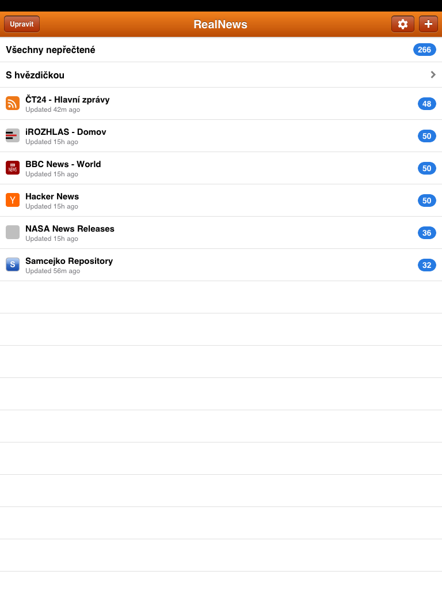
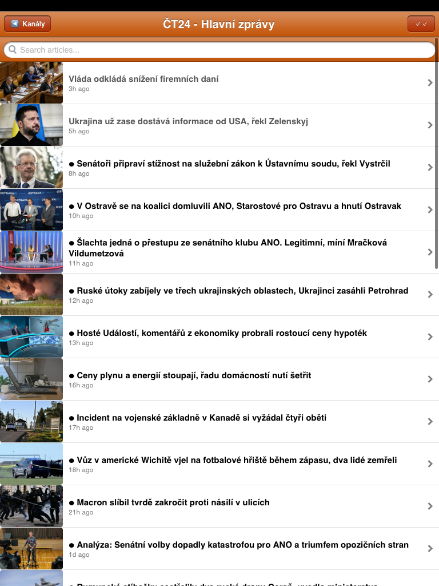
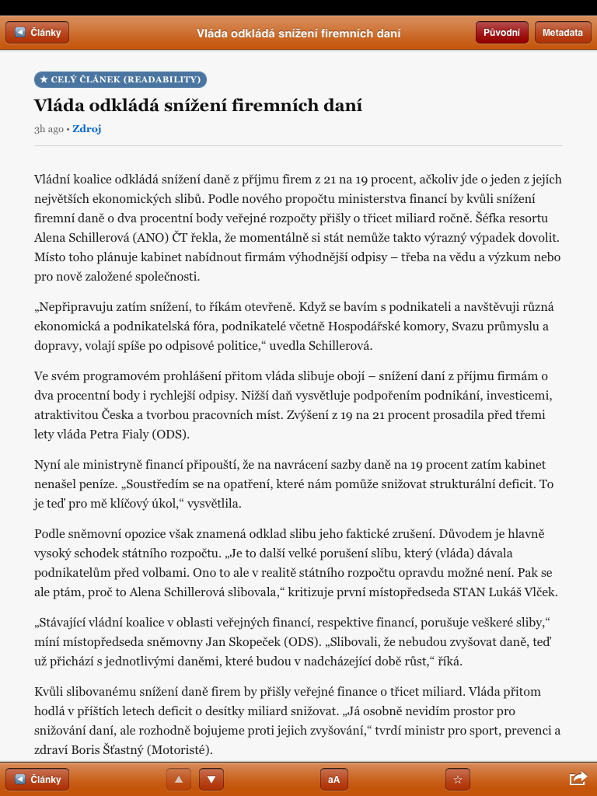
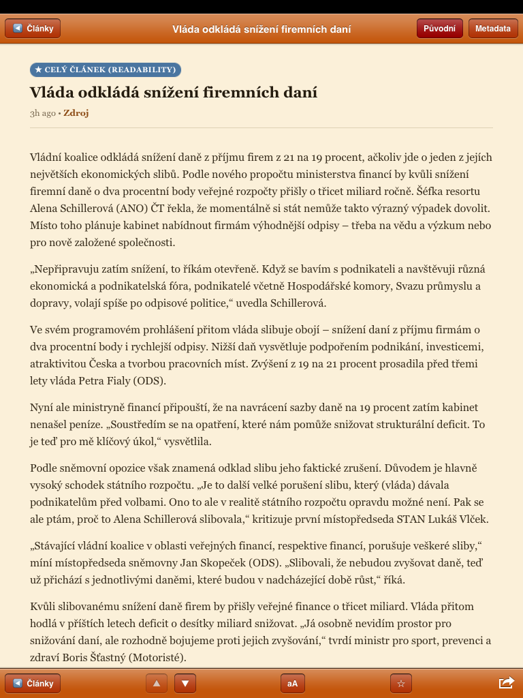
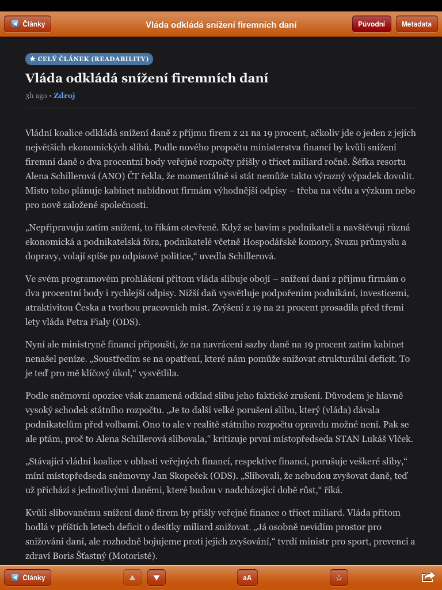
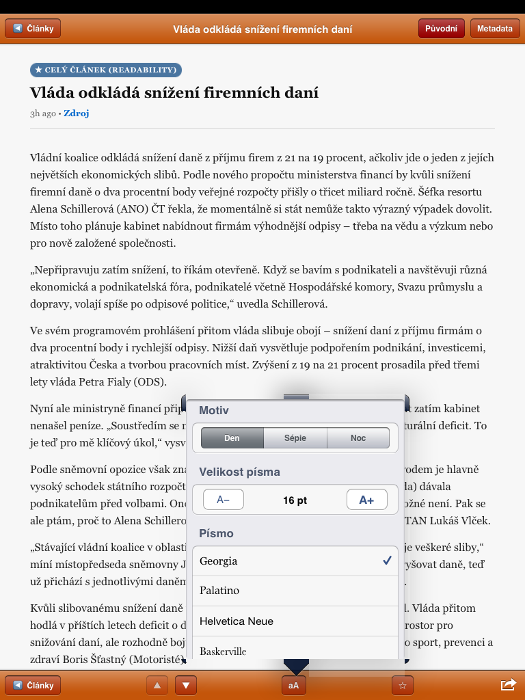
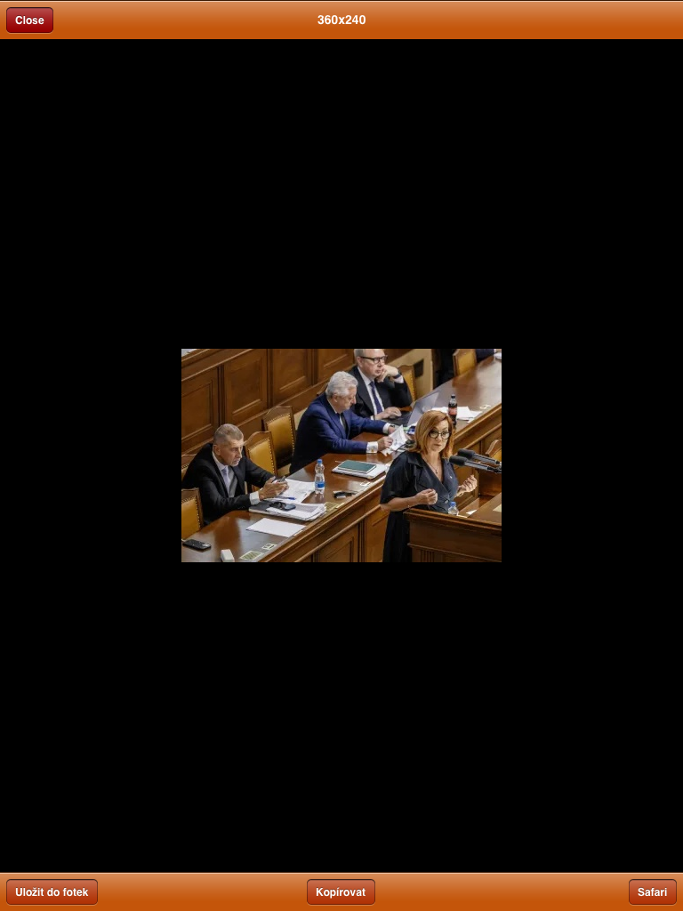

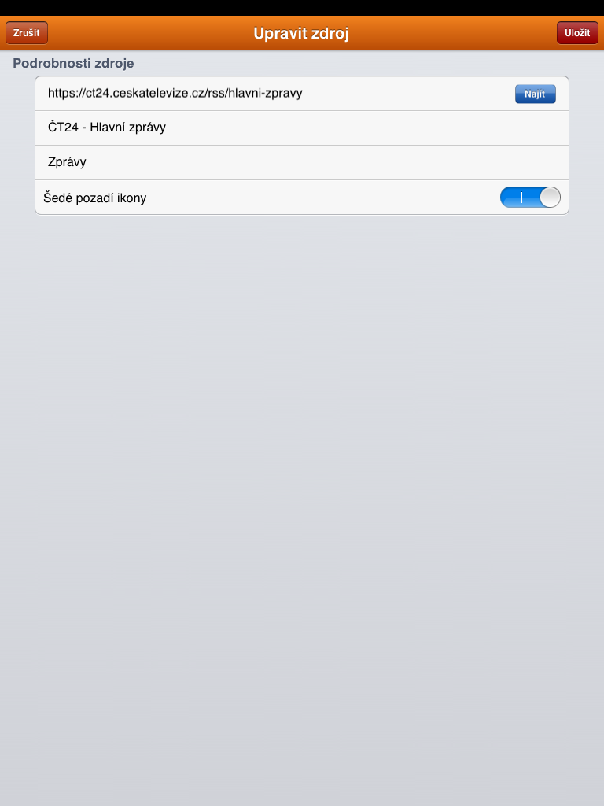
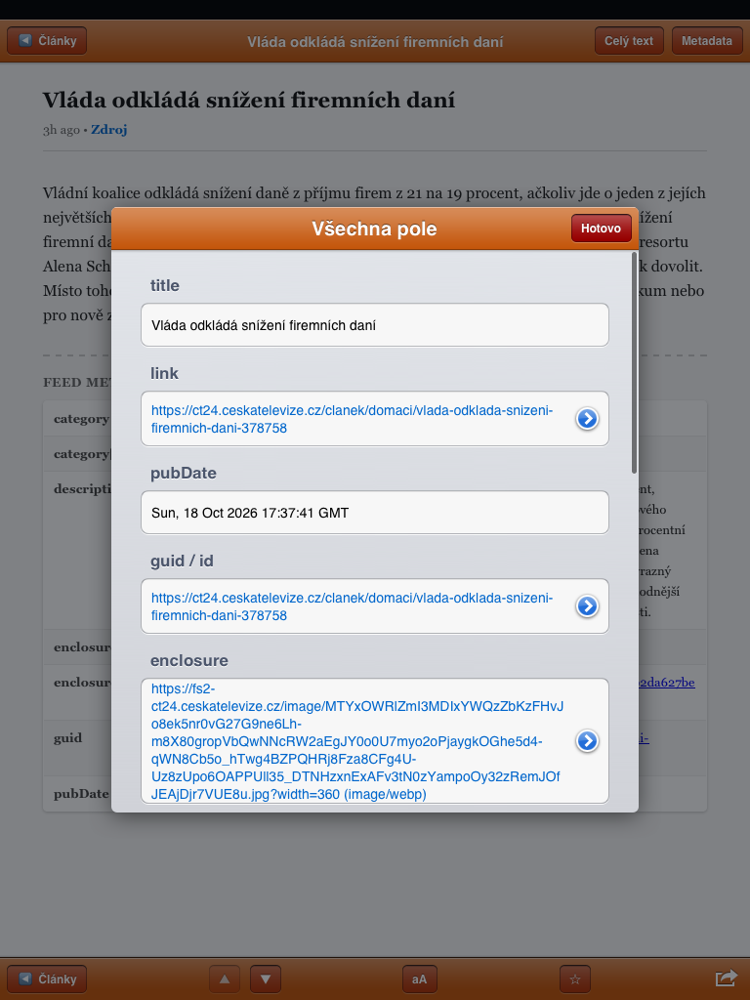
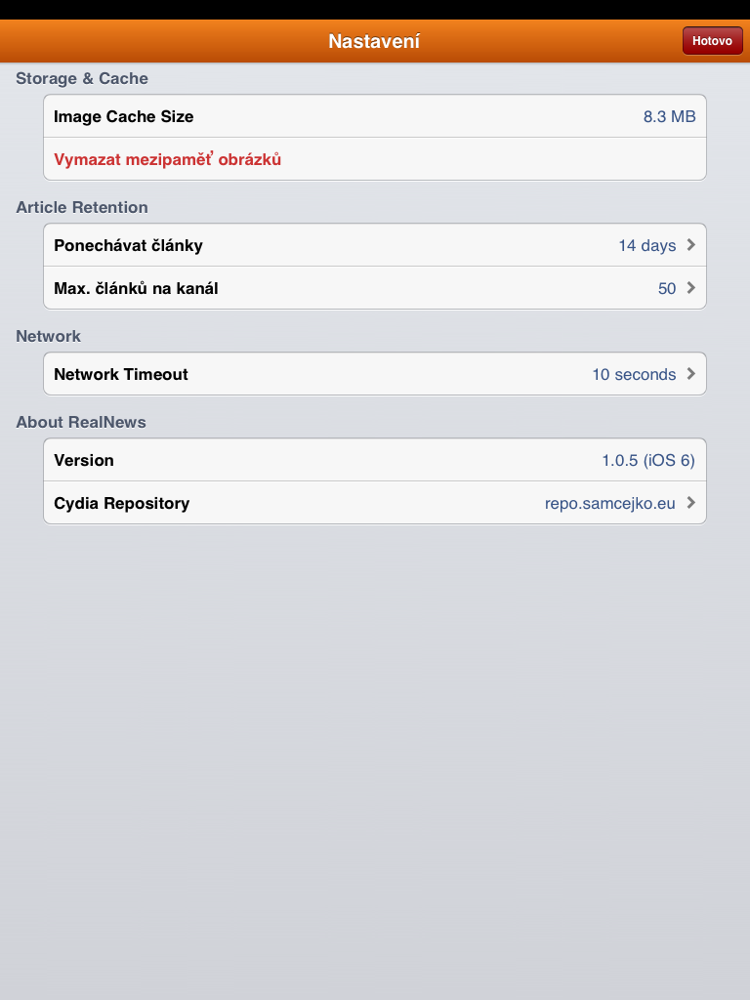
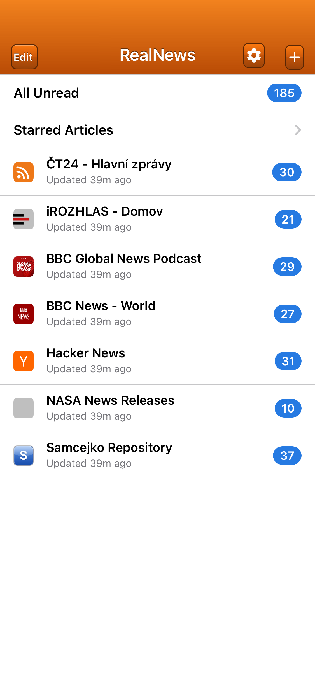
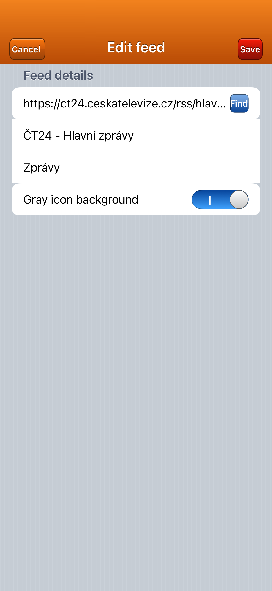
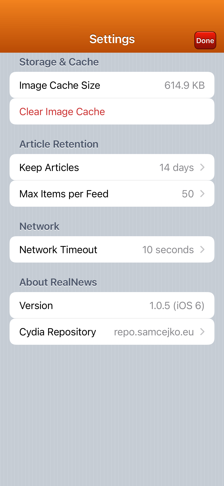
Unofficial apps by samcejko, not affiliated with or endorsed by Twitch, Google, Apple, TikTok, Instagram, Meta, Spotify, Kick, NVIDIA, Mojang, Microsoft, OpenRouter, Vine, X, diVine or the Moonlight, Sunshine and Apollo projects.